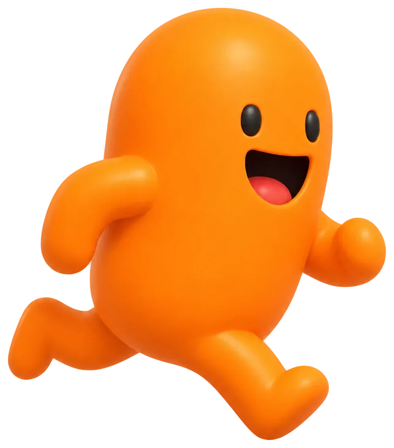
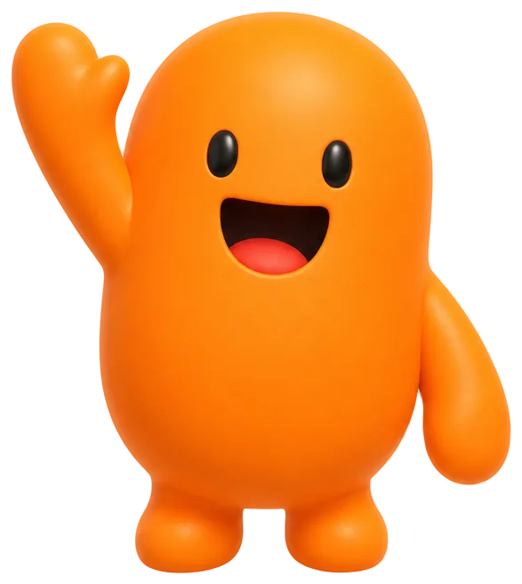
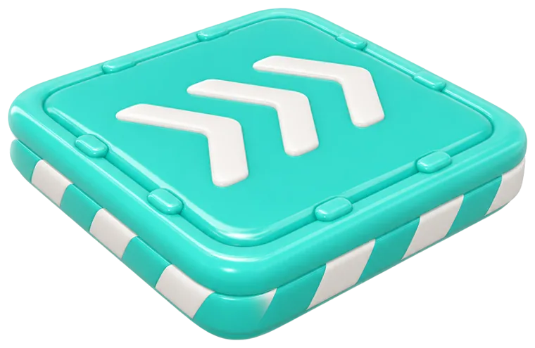
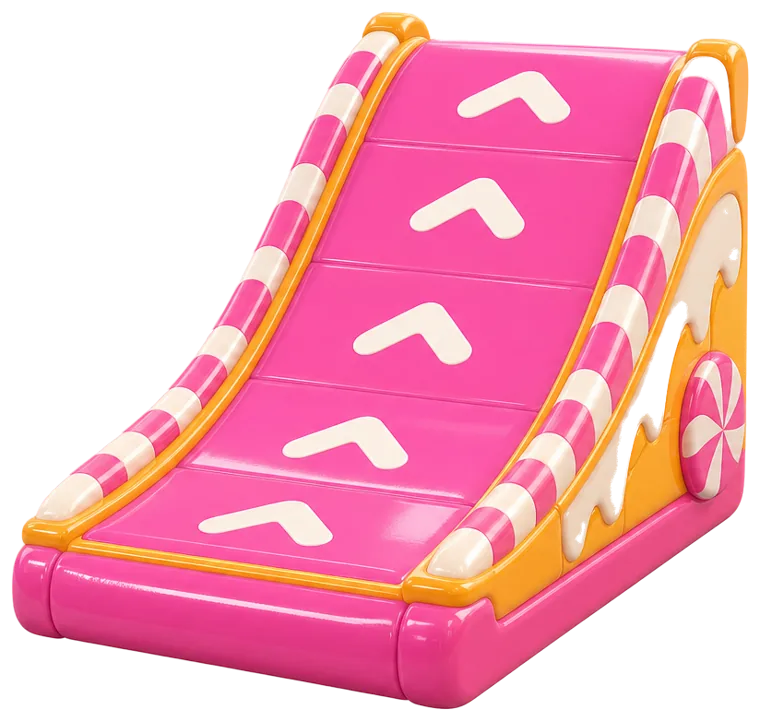
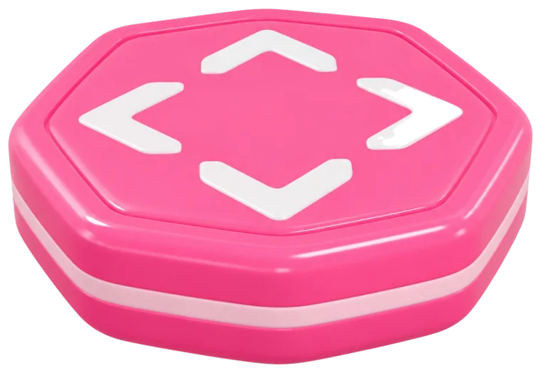
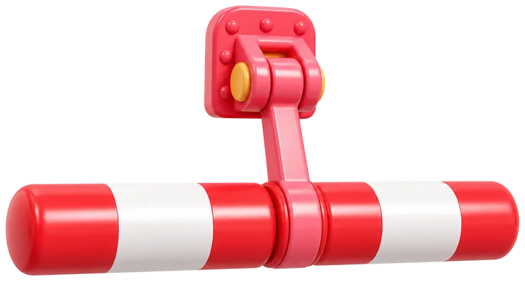
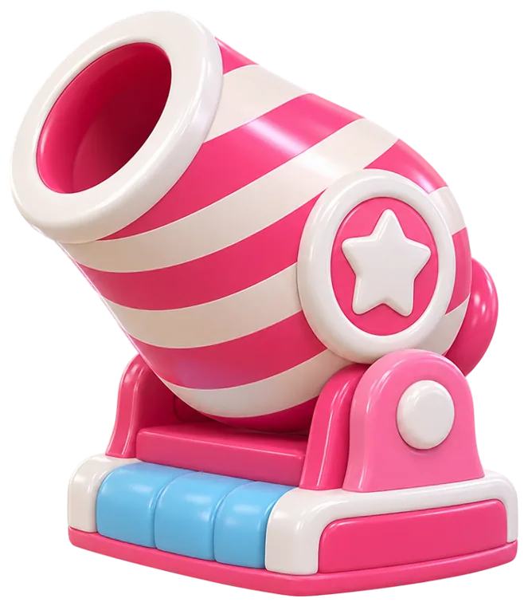
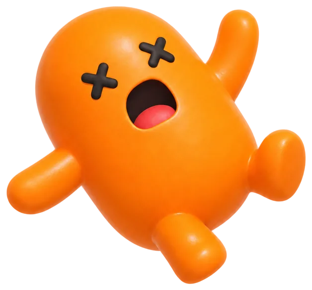
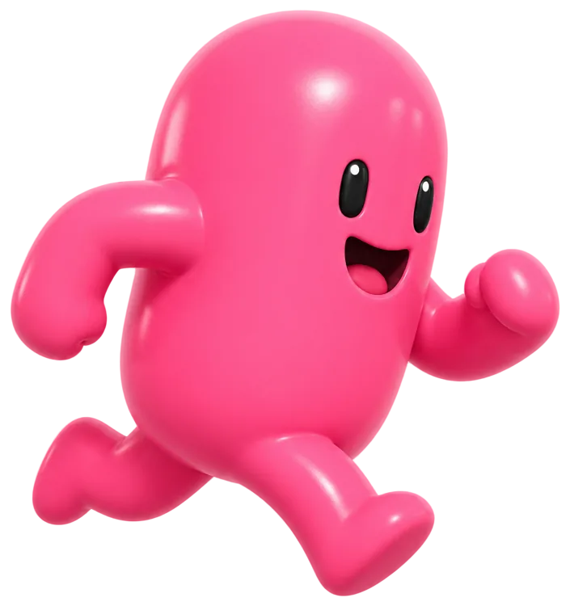

p0 · salida
Batir tu tiempo
es todo el juego.
Topadero es un prototipo de plataformas de obstáculos para el navegador, estilo Fall Guys, de un solo jugador en local. Mueves una cápsula naranja por un circuito corto y peleas contra el cronómetro. Ya se juega: es un prototipo, hay poco y es pronto, pero funciona en el navegador y el desarrollo es abierto.
CRONO 00:00.000 ·p0 → meta ·jugable ya

p1 · qué es
Un muñeco que da gusto mover.
Toda la apuesta del prototipo cabe en una frase: que mover la cápsula se sienta bien. Controlas al blob en tercera persona, con una cámara orbital que lo sigue suave mientras giras con el ratón. El salto va solo cuando estás apoyado, sin doble salto, así que cada brinco se piensa. No hay menús ni historia: hay un circuito, un reloj y tú.
WASD· ESPACIO· RATÓN· R

p2 · firma
Mismo input, misma trayectoria.
La regla del proyecto no se negocia: la física es determinista e independiente de la tasa de fotogramas. A 30 o a 144 FPS, el mismo salto cae en el mismo sitio. No es un eslogan, es una puerta de calidad: hay un test de determinismo que tiene que pasar, y si no pasa, no se da por terminada ninguna parte del juego. Abajo lo ves dibujado: dos trazas del arco de salto a distintos FPS que se calcan hasta el último píxel.
p3 · el circuito
De p0 a meta, en orden.
El nivel es una secuencia corta de primitivas: cápsulas, cajas y cilindros, sin un solo modelo 3D. Sales en p0, encadenas plataformas hasta p5, subes una rampa y esquivas un obstáculo en movimiento antes de cruzar la meta. Cada pieza tiene su física y su sitio. Aquí la numeración está ganada, porque esto es de verdad una secuencia.
-
p0 · salida

Plataforma
apoyo ancho
-
p2 · rampa

Rampa
subes de nivel
-
p3 · tramo

Plataforma
paso medio
-
p4 · obstáculo

Obstáculo
te empuja
p4 · el obstáculo
Te empuja. Y te puede tirar.
En mitad del circuito hay un obstáculo en movimiento que no perdona. Al contacto te empuja con un impulso de derribo y puede sacarte de la plataforma. Si caes, vuelves al punto de salida del intento en pocos segundos, sin recargar la página. Pulsas R y empiezas de nuevo. El reloj sigue, claro.
respawn ≤ 3 s· R reinicia el intento


p5 · controles
Cuatro cosas que aprender.
Mover con WASD o las flechas. Saltar con Espacio. Orbitar la cámara con el ratón. Reiniciar el intento con R, sin recargar. Eso es todo. La ficha de abajo es la lista exacta, sin adornos.
-
WASD
Mover
o flechas · relativo a la cámara
-
Espacio
Saltar
solo apoyado · sin doble salto
-
Ratón
Cámara
órbita en tercera persona
-
R
Reiniciar
vuelve a la salida · sin recargar

Llega a la meta y bate tu tiempo.
TU TIEMPO --:--.---
El circuito termina en un arco dorado. Crúzalo y el cronómetro marca tu tiempo. Es un prototipo: pocas piezas y todavía pronto, pero ya se juega en el navegador. Dale unas vueltas, mejora tu marca y, si te va el detalle, el desarrollo es abierto.